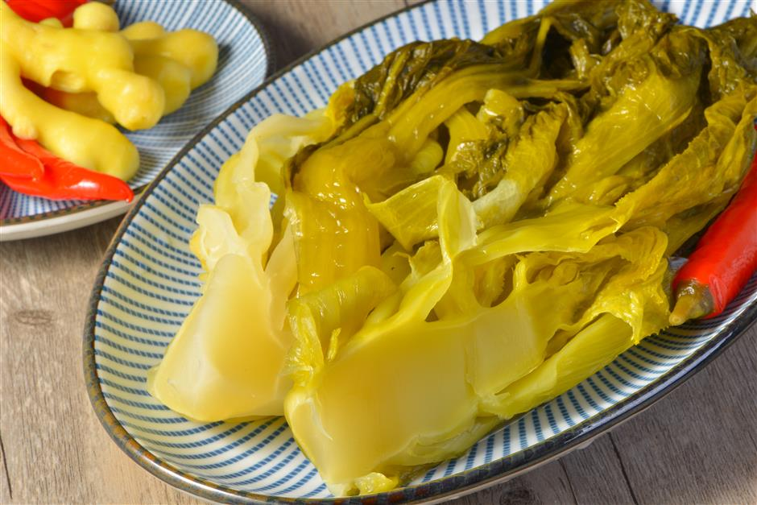

Even though sauerkraut is a German word meaning sour cabbage, Chinese sauerkraut or suan cai, sometimes also called xiān cài, is probably the very first version of sauerkraut, as it is known that the laborers who built the Great Wall of China ate it as standard fare over 2000 years ago. In fact, sauerkraut is thought to have originated in the north of China among the Mongols, and was most likely brought to Europe in the 13th century with the Mongol invasion and the migration of nomadic tribes. Traditionally, suan cai from Northern China uses shredded napa cabbage, which is shortly blanched, salted, and then fermented in its own juice with the addition of rice wine, while in the southern parts of the country Chinese mustard greens are used instead.
Meal prep time : 1 hour
Servings : 1